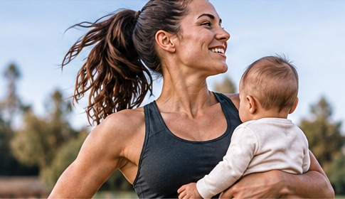

Pregnancy
Understand physical changes and how activity may be adapted during pregnancy.
Explore pregnancy →Science-informed guidance, practical tools and trusted resources for athletes navigating pregnancy, postpartum recovery and a return to sport.

Find practical, athlete-focused information for the questions that matter at each stage.
Understand physical changes and how activity may be adapted during pregnancy.
Explore pregnancy →Learn about healing, pelvic floor health, core function and recovery after birth.
Explore postpartum →Explore broad recovery phases and the goals that may matter in each one.
View the roadmap →Consider strength, impact tolerance, symptoms and sport-specific preparation.
Explore return to sport →Explore feeding logistics, comfort, hydration and energy needs for active mothers.
Explore breastfeeding →Make space for mental health, sleep, identity and support during transition.
Explore wellbeing →Select an anatomical area to learn how pregnancy, postpartum recovery and sport may involve different body systems.
Open body map →Explore recovery phases, reflect on readiness considerations and learn when to seek professional support.
Explore the roadmap →Returning to sport is about rebuilding function, confidence and capacity—not rushing a calendar.